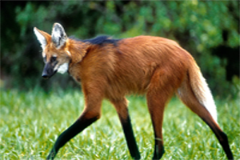

Apresentação
O lobo-guará (Chrysocyon brachyurus) é o maior canídeo da América do Sul e um símbolo do Cerrado brasileiro.
Com suas pernas longas, pelagem avermelhada e hábitos solitários,
ele se destaca pela elegância e importância ecológica.
- Habitat: Cerrado, Pampas e áreas abertas da América do Sul
- Alimentação: Onívoro – frutas (como a lobeira), pequenos animais e insetos
- Comportamento: Solitário e territorialista, ativo principalmente ao amanhecer e anoitecer
- Importância: Auxilia na dispersão de sementes e no equilíbrio do ecossistema
- Estado de conservação: Vulnerável devido à destruição do habitat e atropelamentos

Apesar de sua aparência única, o lobo-guará não representa perigo ao ser humano e precisa de proteção para garantir sua sobrevivência.
História cultural
O lobo-guará sempre despertou a curiosidade e o respeito das populações que convivem com ele.
Presente no folclore e na tradição oral, muitas lendas cercam esse enigmático animal,
associando-o a presságios e espíritos protetores das matas.
Para povos indígenas e comunidades rurais, o lobo-guará é visto como um símbolo de liberdade e inteligência.
Algumas crenças populares o associam ao sobrenatural, considerando sua presença um sinal de mudanças ou mensagens da natureza.
Seu nome, inclusive, tem origem tupi e significa “lobo avermelhado”.
Além do imaginário popular, o lobo-guará é um verdadeiro guardião do Cerrado.
Sua presença é fundamental para o equilíbrio ecológico, especialmente na dispersão de sementes,
como a da lobeira, fruta essencial em sua alimentação.
A cédula de duzentos reais
Em 2020, o lobo-guará foi escolhido para estampar a cédula de 200 reais, emitida pelo Banco Central do Brasil.
A decisão teve como base uma pesquisa realizada em 2001,
na qual a população votou nos animais da fauna brasileira que gostariam de ver representados no dinheiro do país.
O lobo-guará ficou entre os mais votados, ao lado da tartaruga-marinha e do mico-leão-dourado.
A escolha do lobo-guará carrega um forte simbolismo.
Esse animal solitário e discreto representa a riqueza da biodiversidade do Cerrado, um dos biomas mais ameaçados do Brasil.
Além disso, sua presença na nota reforça a importância da conservação das espécies nativas e do combate às ameaças que ele enfrenta,
como a destruição do habitat e os atropelamentos em rodovias.
Com sua imagem circulando pelo país, o lobo-guará ganhou ainda mais visibilidade,
tornando-se um verdadeiro símbolo da fauna brasileira e da necessidade de preservação ambiental.